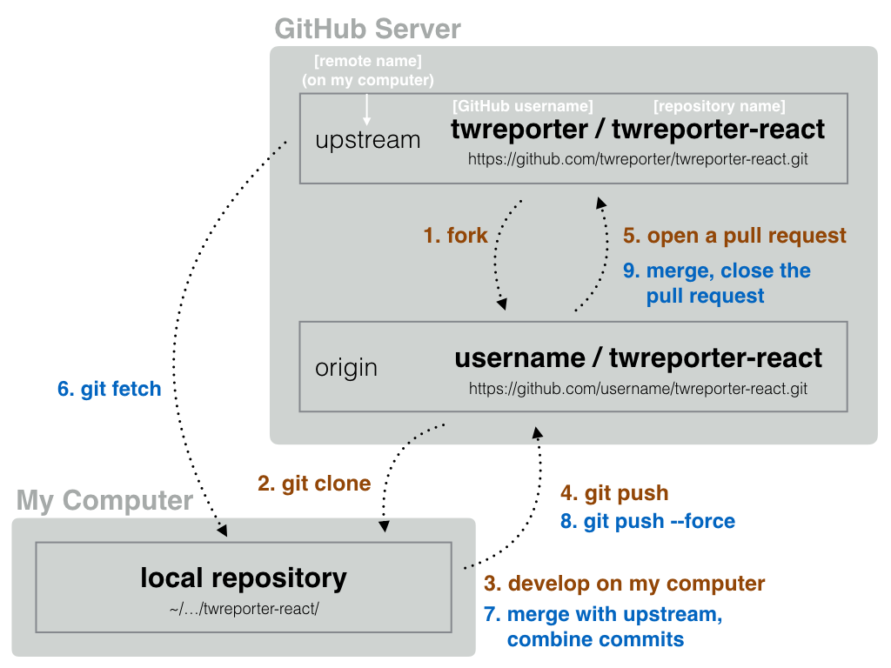

一般協作開發操作流程簡介：
情境：在 GitHub 上有一個別人的專案，要怎麼加入協作開發？

步驟簡述：
一、複製專案下來本機電腦開始開發：
1. Fork
2. Git clone
3. Develop on my computer
- 記得檢查設定 remote 相關設定，讓
git fetch 和 git push 等指令指向正確的目標
4. Git push
5. Open a pull request
二、開發中：
- 開發一個小階段就可以再
git push 到 GitHub 上，會自動更新到 PR 內容，在 PR 內進行 code review 和修改
- 開發中有需要和別人新的開發成果整合時，可使用
git fetch。
- 不要用
git pull 拉回遠端 upstream 的資料，它會做多餘的事情製造預料之外的麻煩，請用 git fetch。
三、開發完成後合併到原始專案：
- 開發完成後要整理 commit log ，並且抓回最新的程式碼作 merge 處理 conflict
6. Git fetch
- 不要用
git pull 拉回遠端 upstream 的資料，它會做多餘的事情製造預料之外的麻煩，請用 git fetch。
7. Merge with upstream, combine commits
8. Git push --force
9. merge & close the pull request
用 git rebase 整理自己的 commit log
git rebase -i e3rji30c
可參考資料：
Git-rebase 小筆記 - Yu-Cheng Chuang’s Blog